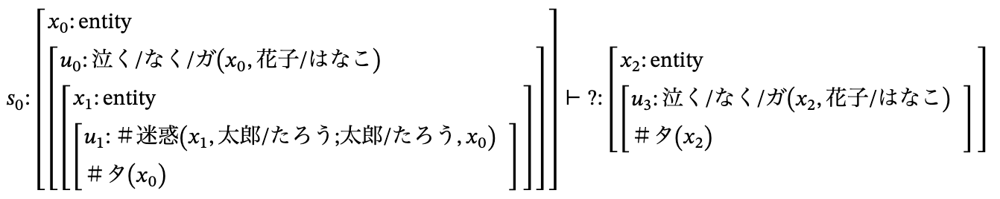

Live Demo
The demo runs the actual prover on a pre-loaded JSeM problem (a Japanese-language semantic-inference test set). The four-panel dashboard below is generated from a real proof-search trace.

The first request may take 10–20 seconds while the container wakes up (idle scale-to-zero).
Four Coordinated Views
Each panel answers a different developer question about the symbolic search.
Search Tree
success
fail
depth-exceeded
The full goal/subgoal hierarchy. Reveals the
structure of exploration.
Flame Graph
Width = wall-clock duration. Shows where time is spent across the proof tree.
Rule Statistics
Per-rule attempts, successes, failures, and average duration. Identifies bottleneck rules.
Failure Analysis
Failures grouped by category
(depth_exceeded, loop_avoided,
time_limit, deduce_failed) with
goal snippets.
Run It Yourself
A pre-built Docker image bundles the compiled lightblue binary, the KWJA tokeniser models, and the pre-baked JSeM 720 proof-search query. No external services or datasets are required at runtime.
# No build needed — pull and run in one command
docker run -p 3000:3000 lilkohapizza/wani-viz-demo
# → open http://localhost:3000/searchlog
What runs at startup (default): the container
loads the pre-baked JSeM 720 ProofSearchQuery into
Express, starts the Yesod server on port 3000, and a
visitor of /searchlog sees the four-panel
dashboard rendered from a real proof-search trace.